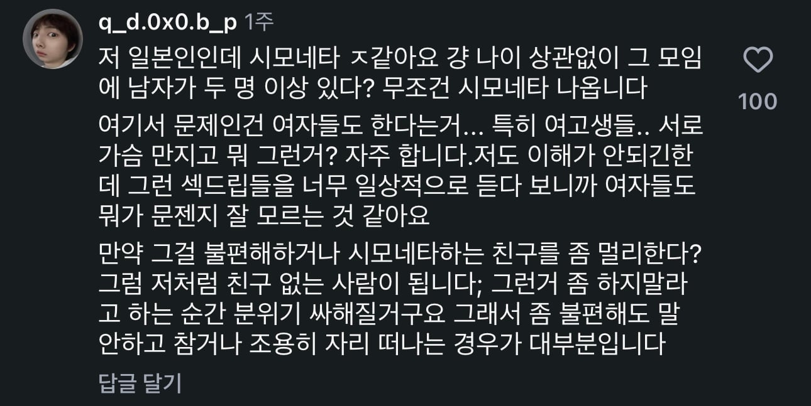

어떻게 한국 일본 양국은 바로 옆에 붙어 있으면서 중간이 없고 둘 다 존나 극단적인 거냐...

어떻게 한국 일본 양국은 바로 옆에 붙어 있으면서 중간이 없고 둘 다 존나 극단적인 거냐...
그래도 나는 만지지 않았다. 이 사례는 뭐임
그냥 일부 얘기를 전체로 몰아가는거같은데 저거
어떻데 성추행을 그냥넘어가는게 나라문화야
나라 문화 맞어... 일부가 아니고 진짜 대놓고함.
그리고 영화제목은 그래도 나는 하지않았어 이고...
원죄는 일본 사법시스템이 개병신이라 나온거지 딱히 여자 편들어줄려고 생긴건 아님.
우리 어릴때 학교에서 체벌하던거, 그거 다 폭행인데 폭행이라고 안했잖아
문화란건 그런거임
적절한 비유내 똑똑하당
밸런스 게임을 한다면 성진국보다는 유교 탈레반이 더 나은 건가?
개인적으로는 유교 탈레반이 사회적으로 좋은듯
출산율 관리할수 있으면 유교탈레반이 낫지
근데 페미 창궐에 ㅈ망하는꼴 보면...
일본에서은 다수는 무조건 옳고 소수는 무조건 틀렸다고 하는 분위기인거 같음
그게 작게는 이지메가 되는건데 스케일이 커질수록 점점 이상해지는 느낌임
저번에 그 가마 옮기는 축제에서도 간판 부셔졌는데 축제 참여한 인원이 다수고 피해자는 소수니까 그냥 넘어가는거나
축제에서 사망사고 있어도 피해자가 소수쪽이니까 피해자 가족들이 사과하고
공공장소에서 성추행 당했을때 다수가 조용히 있거나 그냥 넘어가는데 소수가 목소리 키우면 문제되는 느낌
ㄹㅇ
메이와쿠 문화. 내가 부당한걸 당해도 그 부당함을 문제 제기함으로 인해 다수가 불편해지므로 그냥 넘김
일본 미디어도 한 몫 하는 듯
ㅅ드립은 친구끼리도 가끔하지 않나. 일본은 대중적으로 하나보네 가깝지만 멀게 느껴지네
우선 일본 신고하면 그 특유의 일본 프로세스때문에 한세월 걸림 ㅋㅋㅋ
그리고 제일 문제는 자칫하면 일 크게만든 병신취급으로 이지매 시작함
보만튀가 일상인나라엿구만
기분나쁘면 하지않는게 맞고
자기들끼리 기분안나쁜 장난은 굳이 우리 시선대로 그럴필요없지 오히려 우리가
너무 성엄숙주의라고 생각할 수도 있고
해외에선 안하는거보면 진짜로 문제없다고 생각하는게 아니라 철저히 자국 여자애들 깨스라이팅 ㅈㄴ해서 신고하는게 병신인 분위기 만들어놨나봄
음습 그 자체
그런것치곤 외국여자한테도 해서 진짜 별로였다는 증언하는 외국여자 글도 꽤 있음
되려 불쾌한 기색보이면 정병취급한다는 내용도 있고 한국어로 찾아봐도 상당할걸
지들끼리 그러고 살겠다는데 어쩌겟어
일본은 여권만 낮은줄 알았는데
방송국에서 목욕탕에서 남자 알몸 같은거 딱 중요 부위만 가리고 엉덩이 같은건 그대로 내보내는거 보고
그냥 여권 남권 둘다, 그러니까 인권 자체가 낮다 싶더라
주류 미디어가 존나 틀딱이라서 그런거 같음.
자막 스타일도 90년대 00년대 그대로 쓰고, 화면 구성도 똑같고, 컨텐츠도 비슷함.
시모네타 괜찮아~ 이정도는 괜찮아~ 하는 느낌으로 은근슬쩍 끼워넣음.
선진국이네
컴퓨터와 인터넷 보급률? 익숙함의 차이 같음
우린 90년 후반부터 전국에 퍼져서
시청자들이.방송국 홈피도 찾아가고 막 이리저리 조터지며 싸우는데
저김 컴터 할줄 아는 여성자체가 좀 적었다고 알음
이제 많이들 하고 스마폰도 많이 보급됬으니
일본도 바껴가겠지
동조선 가?
우리도 강간 피해자가 잘못이라고 하던 나라인걸
한국도 예전엔 그랬는데 어느순간부터 섹드립 치면 개호로새끼 되어있음 그러니까 그냥 입꾹닫고 인생 사는게 젤편함
원래 타문화는 이해 안 감;;;
유유상종이라고 주변에 그런애들만 있는거임 배운애등이랑 다니면 안그럼
잘생길것
우리나라에선 성희롱인데ㄷㄷㄷ
한국은 안해도 성추행 성희롱인데 ㅋㅋ
봐주는 사람들이 범죄자들이 당연한 사회를 만들어주는거
우리나라도 아줌마들은 아직도해......
평범한 개틀딱한국기득권세대랑 똑같네
시모네타는 뭐임 시발
성적인 주제로 하는 농담. 섹드립.
일본은 공영방송인데도 몇년전까지 예능에서 신인 여자연예인 보고
(패널1)첫경험 언제냐?
>(방청객)에에에~~
>(패널1)아니아니 첫'키스'를 말한거라고?!
>(패널2)아 그런건가 www
>(패널3)중학생이냐?!
어런식으로 은근히 첫키스 썰정도는 중학생 정도 수준의 가벼운 드립이다는 식으로 몰아감.
개인적으로 동의 없이 만지고 그러는 범죄는 당연히 말이 안되지만 우리나라 성엄숙주의도 딱히 좋아보이진 않음
성리학 공자 맹자 ㅅㅂ새끼들..

일본남자들 ㅈㄴ 부럽네 ㅅㅂ 섹드립쳐도 여자들이 정색안한다는거자나.. 섹드립하는사이는 또 떡칠 확률이 높아진다는 연구결과도있음

니 모솔아다지?? ㅋㅋㅋㅋㅋ

근데 지하철에서 치한으로 당하면 걍 자살할정도의 나라잖아 도대체 저긴 모순이 왤케 심하냐
그건 무고당한거고 저 피해자 입장이랑 다름. 무고는 가해자 피해자가 둘 다 확실함. 근데 저런식으로 만튀하는건 일단 가해자가 누군지 특정 어렵고 찾기힘들고 경찰에 도움을 요청하는것부터가 번거로움 이런거해도되나? 하면 어떻게찾지? 가해자 특징 기억도 안나는데 아니라고 하면 어떡하지? 이런것들땜에 피해당하고도 신고못하는 사람들이 아직도 있는거임 교통사고같은거놔도 cctv 뒤져보면 나오기야할텐데 다 찾아주지않잖아
신고 안한다 하는데 무고 이전에 엔자이가 있던거 아닌가?ㅋㅋ
경험상 본인이 분위기 못맞추는 사람이 되는 것, 재미없는 사람이 되는 것에 굉장히 민감한 것 같음
실제로 그런 사람에 대한 평가가 생각 이상으로 안좋기도 하고..
한국에선 걍 노잼인 사람, 본인 생각이 분명한 사람으로 끝날 일이 더 심각하게 받아들여지는 느낌임